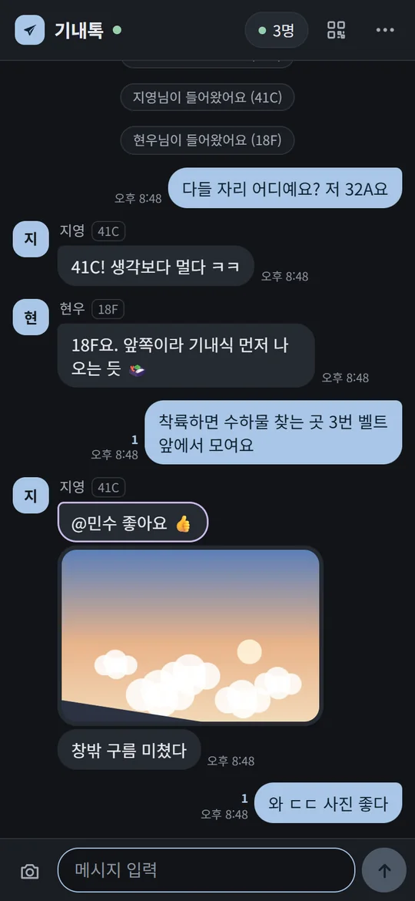
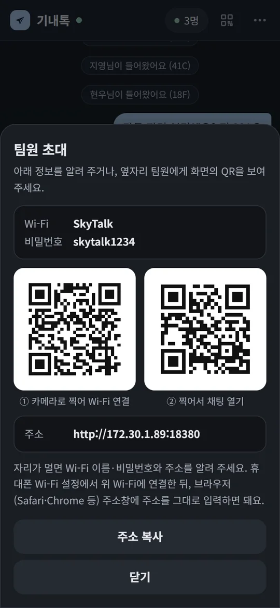
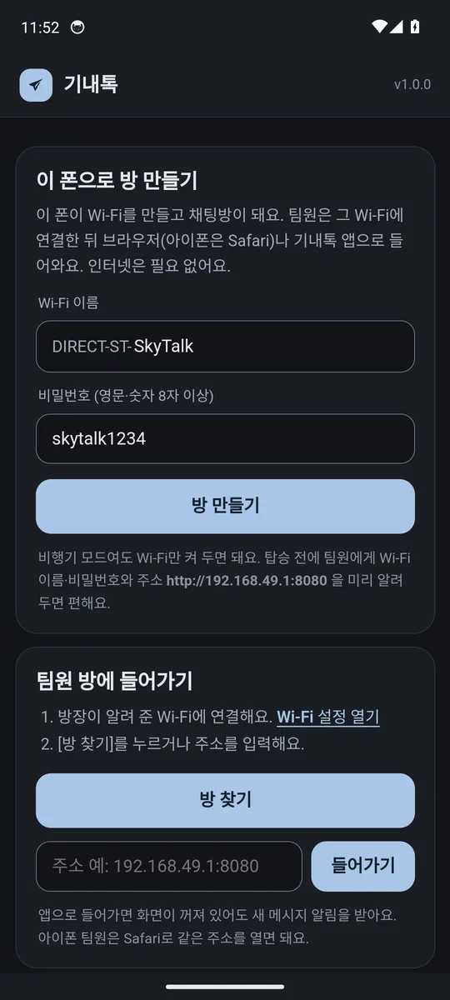
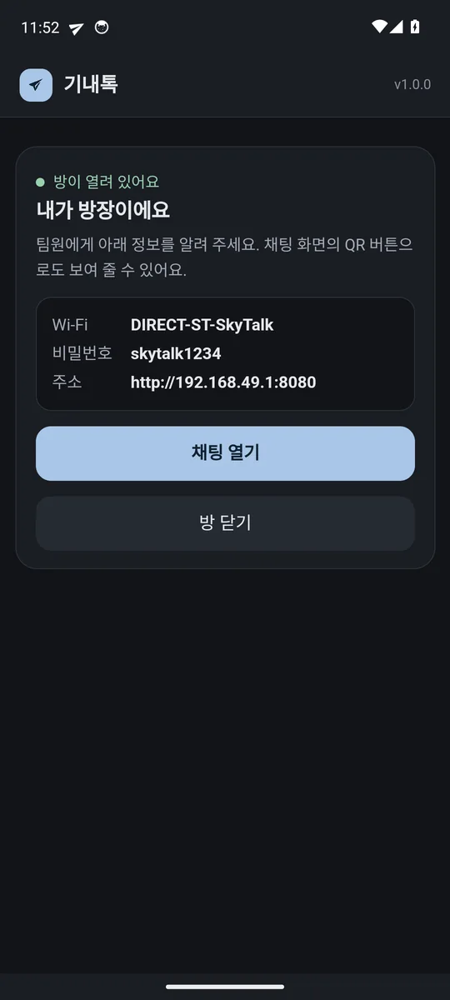
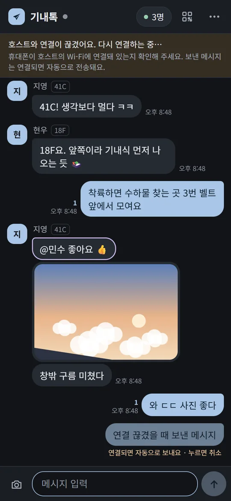
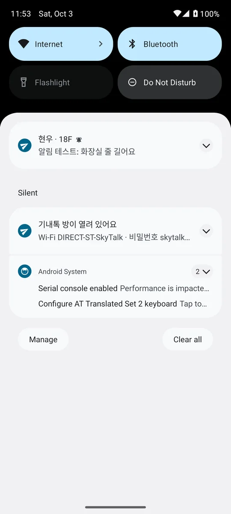

인터넷 없이,
비행기 안에서 팀원끼리 채팅
방장 한 명의 노트북이나 안드로이드폰이 작은 Wi-Fi와 채팅방을 만들고, 나머지 팀원은 그 Wi-Fi에 연결해 휴대폰 브라우저로 들어와요.
- 인터넷·데이터 필요 없음
- 팀원은 설치 필요 없음
- 아이폰·갤럭시 모두
- 회원가입 없음






어떻게 동작하나요
방장 (1명)Windows 노트북 또는 안드로이드폰이 Wi-Fi를 직접 만들고 채팅방(서버)이 돼요.
◀ Wi-Fi ▶
(인터넷 아님)
(인터넷 아님)
팀원 (여러 명)그 Wi-Fi에 연결하고 Safari·Chrome으로 주소를 열면 끝. 아이폰도 그대로.
대화와 사진은 방장 기기에만 저장되고, 밖으로 나가지 않아요. 끝나면 메뉴의 대화 내용 저장으로 각자 보관할 수 있어요.
내려받기 (방장만)
탑승 전, 인터넷이 될 때 방장 기기에 받아 두세요. 팀원은 받을 게 없어요.
가장 추천
Windows 노트북
설치 없이 더블클릭 한 번. 노트북 Wi-Fi로 핫스팟(인터넷 없이)과 채팅방을 함께 켜요.
SkyTalk-Windows.zip .bat 파일로 바로 받기
노트북이 없을 때
안드로이드폰
Wi-Fi Direct로 비행기 모드에서도 방을 만들어요. 안드로이드 팀원은 이 앱으로 들어오면 새 메시지 알림도 받아요.
SkyTalk.apk 설치 경고가 뜨면?사용법
- 방장을 정해요.노트북을 들고 타는 사람이 1순위, 없으면 갤럭시 등 안드로이드폰. 팀원들 가운데쯤 앉은 사람이 맡으면 Wi-Fi가 고루 닿아요.
- 방장이 파일을 받아 둬요.위 내려받기에서.
- 5분 리허설을 해 봐요.호텔·공항에서 방장이 실행하고, 팀원 한 명이 휴대폰으로 연결해 메시지를 한 번 보내 보면 끝. 노트북마다 Wi-Fi 칩이 달라 미리 확인해 두면 가장 확실해요. 리허설은 기내와 똑같이 모두 비행기 모드 + Wi-Fi 켬(아무 Wi-Fi에도 연결 안 함)으로 해 주세요. 방장 노트북이 호텔 Wi-Fi에 연결돼 있거나 팀원 폰 데이터가 켜져 있으면 결과가 달라질 수 있어요.
- 팀 단톡방에 안내를 올려요.아래 복사용 안내문을 쓰세요.
- (선택) 백업으로 bitchat 설치.방장 기기에 문제가 생겨도 블루투스로 대화할 수 있어요. 자세히
- 비행기 모드를 켜고 Wi-Fi만 다시 켜요.아무 Wi-Fi에도 연결하지 않아도 돼요.
SkyTalk-Windows.bat을 더블클릭해요."Windows의 PC 보호" 창이 뜨면 [추가 정보] → [실행], 관리자 권한을 물으면 [예]. 노트북이 다른 Wi-Fi에 연결돼 있으면 연결을 끊을지 물어봐요 → Y.- 검은 창에 나온 정보를 팀원에게 알려요.
① Wi-Fi 이름 : SkyTalk 비밀번호 : skytalk1234 ② 주소창 입력: http://192.168.137.1:8080
- 노트북 브라우저에 채팅이 열려요.방장도 여기서 대화하면 돼요.
- 노트북은 덮지 말고 화면만 어둡게.덮개를 닫으면 절전으로 꺼질 수 있어요. 좌석 전원이 있으면 충전기를 꽂아 두세요.
Wi-Fi 이름·비밀번호를 바꾸려면 .bat을 메모장으로 열어 맨 위 SKYTALK_SSID, SKYTALK_PASS를 고치세요. (비밀번호 8자 이상)
- 비행기 모드를 켜고 Wi-Fi만 다시 켜요.
- 기내톡 앱 → [이 폰으로 방 만들기]주변 기기·알림 권한을 허용, 배터리 최적화 제외도 허용해 주세요.
- 화면에 나온 정보를 팀원에게 알려요.
① Wi-Fi 이름 : DIRECT-ST-SkyTalk 비밀번호 : skytalk1234 ② 주소창 입력: http://192.168.49.1:8080
- [채팅 열기]로 방장도 대화해요.화면을 꺼도 방은 유지되고, 새 메시지는 알림으로 와요. 충전기를 꽂아 두면 좋아요.
- 설정 → Wi-Fi에서 방장이 알려 준 Wi-Fi에 연결해요."인터넷 연결 없음"이라고 떠도 정상이에요. 연결을 유지하세요.
- Safari(아이폰) · Chrome/삼성 인터넷(안드로이드) 주소창에 주소를 입력해요.노트북 방장
http://192.168.137.1:8080· 안드로이드 방장http://192.168.49.1:8080 - 이름과 좌석을 적으면 끝.옆자리 팀원에게는 오른쪽 위 QR 버튼으로 Wi-Fi·주소 QR을 보여 주면 카메라로 바로 들어와요.
- (안드로이드) 알림이 필요하면 앱으로.기내톡 앱 → [방 찾기] → [들어가기]. 화면이 꺼져 있어도 새 메시지를 알려 줘요.
기능
- 읽음 표시안 읽은 팀원 수가 메시지 옆에 떠요
- @이름 호출나를 부르면 강조 표시와 진동
- 사진자동으로 줄여서 빠르게 보내요
- 끊겨도 안전보낸 메시지를 보관했다가 다시 연결되면 자동 전송
- 참여자·좌석누가 접속 중인지, 어디 앉았는지
- QR 초대Wi-Fi 연결 QR + 채팅 주소 QR
- 대화 저장끝나고 .txt로 보관
- 눈이 편한 화면어두운 기내에 맞춘 차분한 색, 밝은 테마도
문제 해결
주소가 안 열려요
- 휴대폰이 방장 Wi-Fi에 연결돼 있는지 확인하세요. 다른 Wi-Fi로 자동 전환됐을 수 있어요.
http://까지 정확히 입력하세요.https://가 아니에요.- 안드로이드는 모바일 데이터가 켜져 있으면 데이터로 접속하려다 실패할 수 있어요. 비행기 모드(또는 데이터 끄기)로 해 주세요.
- 방장 화면(검은 창·앱)에 나온 주소를 그대로 쓰세요.
- 아이폰: 설정 → Wi-Fi → 연결된 Wi-Fi 옆 ⓘ → 라우터 주소 뒤에
:8080을 붙여 열어 보세요.
Windows에서 "핫스팟을 켜지 못했어요"
- Wi-Fi가 켜져 있는지 확인하고(비행기 모드여도 Wi-Fi는 켤 수 있어요) 창을 닫고 다시 실행하세요.
- 기내 Wi-Fi가 있으면 노트북을 연결(결제 불필요)한 뒤 다시 실행하세요. Windows 모바일 핫스팟으로 자동 전환해요.
- 휴대폰 핫스팟이 켜지면(갤럭시는 비행기 모드에서 안 켜질 수 있음) 노트북과 팀원 모두 그 핫스팟에 연결하고, 검은 창에 나온 주소를 쓰세요.
- 회사 노트북은 보안 정책으로 막혀 있을 수 있어요. 다른 사람이 방장을 맡거나 안드로이드 앱을 쓰세요.
다운로드·설치할 때 경고가 떠요
- 브라우저:
.bat·.apk는 원래 경고가 떠요. [유지] 또는 [무시하고 다운로드]. 경고가 싫으면.zip을 받아 압축을 푸세요. - Windows: "PC 보호" 창 → [추가 정보] → [실행]
- 안드로이드: "출처를 알 수 없는 앱" 설치를 허용하고 [설치]. Play 프로텍트 창이 뜨면 [세부정보] → [무시하고 설치]
- 모든 코드는 GitHub에 공개돼 있어요.
안드로이드: "Wi-Fi Direct를 다른 기능이 쓰고 있어요"
- Quick Share, 스마트 뷰(화면 미러링)를 끄고 다시 시도하세요. 안 되면 휴대폰을 다시 켜세요.
안드로이드 앱이 몇 시간 뒤 꺼져요
- 설정 → 애플리케이션 → 기내톡 → 배터리 → 제한 없음. 갤럭시는 "사용하지 않는 앱을 절전 상태로 전환" 목록에서도 빼 주세요.
아이폰은 알림이 안 와요
- 브라우저는 화면이 꺼지거나 다른 앱을 쓰는 동안 알림을 받을 수 없어요. 다시 열면 그동안 온 메시지가 모두 보이고, 안 읽은 개수가 탭 제목에 표시돼요.
- 알림이 꼭 필요하면 백업용 bitchat을 함께 쓰세요.
알아 두세요 · 기내 Wi-Fi·블루투스는 대부분 항공사가 허용하지만, 승무원 안내가 있으면 따라 주세요. Wi-Fi가 닿는 거리는 기내 환경(좌석·승객)에 따라 달라요.
백업: bitchat
탑승 전에 모두 설치해 두면, 방장 기기를 못 쓰는 상황에도 블루투스로 대화할 수 있어요. 인터넷 없이 주변 휴대폰끼리 메시지를 주고받고, 팀원 폰을 거쳐 최대 7단계까지 전달돼요. 블루투스라 닿는 거리는 Wi-Fi보다 짧아요.